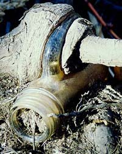

Saturday, April 03, 2004
Decomposition: The Eros Of Office Supplies
The day before I'd thrown a mock hissy about Post-It notes, the square yellow kind. My most excellent nurse, Pam, had recently requested that instead of leaving a Post-It on a chart saying, for example, "please call patient -- how is she doing ?" that I write such a request in the chart itself. The Post-Its, she rightly pointed out, are decidual. And she'd taken to including the post-its in the record. Which I'd never intended her to do. "It's a doctor's order. It needs to be written," she argued.
That day, finding no more room in the progress notes, and too lazy to get a new page, label it, and insert it in the chart, I'd given her a Post-It note request. I felt like a sneaky child trying to get away with something. Nurse Pam, however, would have none of that.
"What's this, Dr. T ?" she intoned ironically.
Guilty as charged, I launched into a mock self-exculpatory diatribe, and, at the dramatic climax, I extracted a large pack of yellow post-its from my desk drawer and brandished them. By now a crowd had gathered. Dr T. was ranting again. How amusing. Nurse Pam -- we share a tiny office -- claims she's going to install a spit shield, especially for when the topic of George Bush come up.
"And look !" I declaimed, "I've even bought at my own expense -- and I'm not even going to deduct them on my taxes ! -- a whole package of Post-Its, unadorned by evil drug company messages !" (Big Pharma showers us with little pads of pseudo post-its emblazoned with their ads. I have banished them from my half of the office.)
I ended up copping to my abject laziness and promising never to do it again.
I love Post-It notes. They might be nature's most perfect office supply. And I love the most clever fluff of a movie in which they feature -- Romy and Michele's High School Reunion. I'm a low woman. So kill me. So low that I also get great pleasure from a well-wrought form. Most forms are ill-wrought. So ill, that I've come to call them, as a class, "Byzantine Forms." Example ? Anything from the registry. All doctors' credentialing and recredentialing forms.
And elegant forms ? Our local MRI provider's order forms. Just topnotch. They please the eye, make ordering simple, provide enough space for clinical details, have a NCR copy for the chart, and a MAP on the verso for patient convenience. Elegant. To match the cheerful clerical staff. Never once have I phoned them up and gotten anything but a warm and helpful person. A perfect congruence of form and function. (Kudos CHEM Center, Stoneham. I love you.)
Our hospital's Communicable Disease Reporting Form's pretty swell, too.
Anyway, the day following my Post-It snit was April 1st.
I arrived to find, unusually enough, our office door closed -- because on the door was a sign:
George Bush Campaign Headquarters, Chief Officer Dr. T.
Laughing, I pushed open the door.
The whole room was plastered in drug rep post-it notes, most of them advertising Zoloft.
And suspended from the ceiling, turning lazily on a piece of 5-0 blue ethilon, was another sign: Dubya's Chimp-like phiz and the slogan --
A Vote For George Bush Is A Vote For America
They got me.
They got me good.
April fool that I am.
Nurse, Administer Caffeine And Meat, Stat !
Already, at 8:15 AM, a quarter hour before opening, two dozen people were queueing up at the Registry of Motor vehicles outside the slotted metal security gate in the otherwise empty mall. The mall muzak was cranked up and Madonna's Material Girl echoed through the corridor. I felt like an extra in a George Romero movie.
At the stroke of 8:30 the gates opened.
We shuffled inside, obeying the crowd control ropes, to face the gatekeeper -- a testy woman holding Godfather-like court beneath a sign that praised Governor Willard Mitt "The Mitthead" Romney. I stated my case (stolen license), was given a byzantine form to fill out, and eventually got a numbered chit estimating my wait time to be "Five Minutes."
So I settled in on the hard wooden bench. No way was I getting out of this joint in "Five Minutes" unless that was RMV-speak for "Thirty Minutes." There's a vague pleasure in being in a bureaucratic limbo: one is out of the loop, temporarily shorn of all responsibilites, on the lam. Like being on a plane, or at the movies. I wished I had a cup of coffee, but otherwise I was content. And there was more. Suspended from the ceiling was a screen with illuminated, bright red scrolling text -- "Motor Vehicle Network" -- installed to provide entertainment for the assembled petitioners. So, naturally, I watched.
First there was "News." Flash ! The Cherry Blossoms are opening in Washington ! You don't say ! (What planet was this news coming from ? Planet Zen, or The Planet of the Ostriches ?)
Then came the "Health Tips." The illness of the day was "Driver Fatigue." The RMV suggested the insalubrious obvious: massive quantities of caffeine. Why not just go for broke, I thought, and counsel dexedrine or crystal meth ?
And did you know that there is another antidote to "driver fatigue" ?
Lean meat.
Starbuck's in one hand, a packet of cold cuts in the other, steering with his knees, the motorist gulps and gnaws his way to alertness.
And, of course there were ads, targeting motorists who had succumbed to "driver fatigue" or "knee driving" and cracked up their cars and themselves. The first was for a personal injury attorney. (Injured ? You deserve compensation !) The second was for a chiropractor. (We take all forms of insurance !)
Does the RMV think that they might be contributing to the rising costs of car and medical insurance by promoting overuse or misuse of these services ?
Grunt. Capitalism good. Advertising good. Grunt. Grunt.
It's what's called the private and public sector partnership. That's what gives us the ugly ads on the sides of buses, and the soda pop and junk food dispensers in schools. Nice to see that under the reign of the Mitthead no opportunity is being lost to let the private mouth suckle at the public teat !
Finally, my number came up: "A207" crooned a canned, dulcet voice over the loudspeaker, "to window 11." No, I could NOT have a new license photo. No way. No can do. Impossible. Not in the cards. The clerk handed me my temporary license -- a large piece of flimsy cardboard bearing the old, ugly mugshot. I could barely contain my disappointment.
And, already, the dulcet voice of the registry angel was summoning petitioner A208.
Wednesday, March 31, 2004
EAT !
I walked through the empty clinic waiting room at the end of the day. The overhead TV, as usual, was on, and blathering away. My eye, good doggy that it is, trained by 52 years of living in TV world, obediently swiveled up to meet the images. An ad. Extreme close up of a face. A man spooning something into his mouth. A look of orgasmic pleasure. Then a merry child with a milk mustache.
"Faugh," I grumbled, wrenching myself out of the tube's sticky grasp.
I was hungry. I'd brought too little lunch. And ate it too early. I'd been guiltily crunching non-vegan wintergreen lifesavers from the clinic stash all afternoon. I don't even like wintergreen. And my dentist would kill me. (Or, less professionally, rub her hands in glee at the prospect of more profitable cavities, broken teeth and crowns.)
And the images of people, close up, filling their happy little pie holes with food made me want to eat. They got me, the marketers. One of their trillion little daily victories. Of course, vegan that I am (or am trying to be), I'd not likely rush out and buy milk or yogurt or icecream or whatever they were shilling. But nonetheless, I wanted to run out and buy something. To fill my unhappy little pie hole.
We went to a bad movie a few weeks ago. Johnny Depp doing a tortured writer thing in Stephen King's, Secret Window. They had him mooning about in a bad bathrobe eating Doritos. The movie was so silly, the product placement dominated plot and character. I sat there the whole time wanting to eat Doritos. Every lovingly reproduced "crunch" reinforced my desire. I could taste Doritos. I could feel them in my mouth, crunching between my teeth. I could imagine the powdery, greasy residue they leave on the fingertips.
I don't even eat them anymore. They're probably not vegan. And when I did eat them, I'd eat way too many of them (how DOES one stop eating such abominations ?) and die for two days afterwards of heartburn, dyspepsia and systemic garlic fume.
But Johnny Depp made me want to eat Doritos.
And the clinic TV made me want to eat. Anything.
These are poisonous, manipulative, insinuating images, and we are awash in them. It's enough to bring out one's inner hungerkunstler.
Tuesday, March 30, 2004
The Mitthead Panders On. And On. And ON.
So the Massachusetts legislature met for yet another session, and narrowly passed a separate-and-unequal, civil-rights-denying, separation-of-church-and-state abrogating travesty of an amendment with which they propose to desecrate the State Constitution.
The Mitthead wasted no time -- the guy needs a choke collar to keep his urge to pander in reign -- getting on the TV and vowing to petition the Supreme Court for a stay in the May 17th deadline for allowing same sex marriages. This was minutes after his Attorney General -- Tom Reilley, a same-sex marriage foe, and the only person empowered to bring such a petition -- had told Romney that he would NOT do so, as it would be illegal; the Court had clearly spoken. Sorry, Gov. no can do.
Cut to the Mitthead, waxing moronic and Republicanic about "the people." How they must be allowed to "speak."
How they must, for reasons of bigotry, hatred and narrowly denominational religious doctrine, be allowed to deny a minority full participation in the rights and obligations of society.
I take comfort in my conviction that history, from the vantage point of future social enlightenment, will judge him harshly: bigoted, cowardly, pandering, backward-looking, self-serving. Our state has been blessed with numerous excellent civil servants -- Paul Tsongas, Mike Dukakis, Ted Kennedy, John Kerry, Barney Frank -- who have been consummately professional, dedicated and even visionary in their service.
This is in great contrast to Mr Romney who brings to office the narrow concerns of the venture capitalist CEO that he was: money, autocratic power, personal gain and personal ambition.
Of course, the likelihood is that this amendment, this ridiculous and cumbersome construction will collapse under the weight of its own grotesquerie long before it ever reaches the ballot. By that time, thousands of same sex marriages will have occurred, the world will NOT have ended. It will even be a brighter and happier world ! There will be more love, more freedom, more connection, more tolerance.
And the Mitthead and his Phelpsian best buds will be left to preach to a dark and increasingly empty house.
The Mitthead wasted no time -- the guy needs a choke collar to keep his urge to pander in reign -- getting on the TV and vowing to petition the Supreme Court for a stay in the May 17th deadline for allowing same sex marriages. This was minutes after his Attorney General -- Tom Reilley, a same-sex marriage foe, and the only person empowered to bring such a petition -- had told Romney that he would NOT do so, as it would be illegal; the Court had clearly spoken. Sorry, Gov. no can do.
Cut to the Mitthead, waxing moronic and Republicanic about "the people." How they must be allowed to "speak."
How they must, for reasons of bigotry, hatred and narrowly denominational religious doctrine, be allowed to deny a minority full participation in the rights and obligations of society.
I take comfort in my conviction that history, from the vantage point of future social enlightenment, will judge him harshly: bigoted, cowardly, pandering, backward-looking, self-serving. Our state has been blessed with numerous excellent civil servants -- Paul Tsongas, Mike Dukakis, Ted Kennedy, John Kerry, Barney Frank -- who have been consummately professional, dedicated and even visionary in their service.
This is in great contrast to Mr Romney who brings to office the narrow concerns of the venture capitalist CEO that he was: money, autocratic power, personal gain and personal ambition.
Of course, the likelihood is that this amendment, this ridiculous and cumbersome construction will collapse under the weight of its own grotesquerie long before it ever reaches the ballot. By that time, thousands of same sex marriages will have occurred, the world will NOT have ended. It will even be a brighter and happier world ! There will be more love, more freedom, more connection, more tolerance.
And the Mitthead and his Phelpsian best buds will be left to preach to a dark and increasingly empty house.
Sunday, March 28, 2004
Pathside Parousia

This photo is of the interface between a tree and a wall's mural of trees. In the gap: a stone, some snow. The wall's concrete has abraded to the texture of bark. The dense stand of painted trees -- smooth trunks pale ghostly gray, leaves shocking red -- march up a steep, light green hill. The real tree, wedged into the hillside, is a field of fissured brown bark.
Further down the path the mural's heavily over-scrawled with graffitti.
Tree, mural of tree, photo of tree and mural of tree, graffitti. The semiotics get increasingly recursive. What was that Dogen said about a painted rice cake ?
As I walked the river path yesterday I saw a man about 30 yards ahead of me repeatedly leaning and reaching into the pathside shrubs. What was he doing ? Was he picking these ?

Or perhaps my fantasy botanist had finally materialized -- the grave and accomplished Mr Uva or Senesec of Weeds Of The Northeast -- and had come to identify my beautiful nameless grass

and offer me further deep and esoteric botanical teachings.
So I quickened my pace, and soon caught up with him.
He was a middle aged, bespectacled fellow, neatly dressed, with a close-cropped, dark and professorial beard. He seemed a bit flustered to find me standing at his side. "I'm removing the orange tags," he explained, brandishing a handful of small plastic orange ribbons he'd removed from bushes. Sure enough -- the whole length he'd come was free of them.
"So you're the tagger -- or the detagger, as it were," I replied, trying to appear friendly and non-threatening. "I'd always wondered about those orange ties."
"Well," he said, "they're to mark what shouldn't be cut, but look, I think some kids have just tied them randomly to plants -- there are ties even on annuals tnat are clearly dead. I think it looks much better without them."
Annuals ! He was using terminology ! I grew more and more excited. This was it. He'd come, my weed messiah. My taxonomic redeemer. This was the apotheosis of my half year riverbank pilgrimage. The guru had arrived.
"Are you a botanist ?" I blurted.
"No !" He recoiled as if from a mild slap. Or from a possible nutjob.
"Oh," I said, crushed, then explained I'd been trying to identify a grass species for months, and had hoped he'd know.
"I see," he mumbled, then was silent. He looked embarrassed. I'd apparantly encountered the only person on the planet shyer than myself.
"Well, then," I said, trying to sound chipper, "carry on !"
He turned back to his methodical harvest, and I ducked down a small trail to the riverbank. The recent snow was melted, and I searched for the bank's little marvel, the ultimate conversation of artifice and nature --

There it was.
I eavesdropped awhile on its teachings, and headed home.